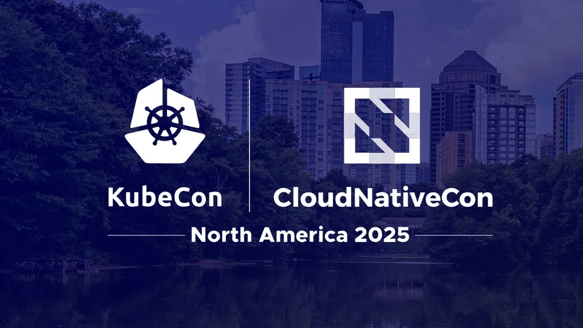

KubeCon North America: Atlanta · November 2025
Quantum-Resistant Kubernetes: Realities, Risks & (Versioning) Pitfalls
Post-Quantum Cryptography is no longer theoretical. With Go 1.24+ enabling ML-KEM by default, Kubernetes v1.33+ inherits significant quantum resistance for key exchange.